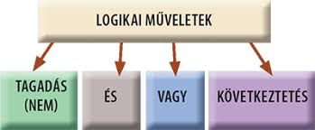

📡 Küldetés-eligazítás

📡 Ikol: Az „és”, a „vagy” és a „ha…, akkor…” más-más módon kapcsolja össze az állításokat. Kán néha épp a kötőszót cseréli ki, hogy megtévesszen. Igazságtáblázattal ellenőrizhetjük, hogyan változik ilyenkor az eredmény.
A „nem”, az „és”, a „vagy”, a „ha…, akkor…” és az „akkor és csak akkor” jelentését pontosan rögzítjük. Ezekkel összetett kijelentéseket alkotunk, majd igazságtáblázattal vizsgáljuk meg őket. Így láthatjuk, mikor igazak, és mikor hamisak.
Logikai műveletek
Egyszerű kijelentésekből — kötőszavak segítségével — összetetteket építünk. Most öt alapműveletet vizsgálunk: négy kétváltozósat és egy egyváltozósat.

Negáció (¬) — „nem …”
📗 Definíció
A \(p\) kijelentés negációja a „nem \(p\)” kijelentés, jele \(\lnot p\). A negáció akkor igaz, ha \(p\) hamis.
| p | ¬p |
|---|---|
| ⊤ | ⊥ |
| ⊥ | ⊤ |
💡 Jó tudni
Emlékeztető: a \(\tau(p)\) a kijelentés igazságértékét jelöli (olvasd: „tau pé”). A kétszeres tagadás visszaadja az eredetit: \(\tau (\lnot \lnot p) = \tau (p)\). „Nem igaz, hogy nem esik” = „esik”. 🌧️
Konjunkció (∧) — „… és …”
📗 Definíció
\(p \land q\) („\(p\) és \(q\)”) csakis akkor igaz, ha \(p\) is és \(q\) is igaz.
Ide tartoznak ezek a kötőszavak is: de, noha, bár, meg, viszont, pedig, …is …is. („Esik az eső, de süt a nap” = \(p \land q\).)
| p | q | p ∧ q |
|---|---|---|
| ⊤ | ⊤ | ⊤ |
| ⊤ | ⊥ | ⊥ |
| ⊥ | ⊤ | ⊥ |
| ⊥ | ⊥ | ⊥ |
Diszjunkció (∨) — „… vagy …”
📗 Definíció
\(p \lor q\) („\(p\) vagy \(q\)”) csakis akkor hamis, ha \(p\) is és \(q\) is hamis. Ez a megengedő „vagy”: lehet mindkettő is igaz.
| p | q | p ∨ q |
|---|---|---|
| ⊤ | ⊤ | ⊤ |
| ⊤ | ⊥ | ⊤ |
| ⊥ | ⊤ | ⊤ |
| ⊥ | ⊥ | ⊥ |
⚠️ Kán csapdája — megengedő és kizáró „vagy”
A hétköznapi „vagy” néha kizáró: „Egy dolgozatod jegye 1-es vagy 5-ös” — nem lehet mindkettő! A kizáró „vagy” jele \(\veebar\) (jele: \(p \veebar q\)), és pontosan akkor hamis, ha a két tag igazságértéke megegyezik. „Kávét vagy teát iszom (akár mindkettőt)” viszont megengedő (\(\lor\)). ☕🍵
Kíváncsi vagy a kizáró vagy (⊻) táblázatára?
| p | q | p ⊻ q |
|---|---|---|
| ⊤ | ⊤ | ⊥ |
| ⊤ | ⊥ | ⊤ |
| ⊥ | ⊤ | ⊤ |
| ⊥ | ⊥ | ⊥ |
Röviden: \(p \veebar q\) = „különböznek”. 🎯
Implikáció (⇒) — „ha …, akkor …”
📗 Definíció
\(p \Rightarrow q\) („ha \(p\), akkor \(q\)”) csakis akkor hamis, ha \(p\) igaz és \(q\) hamis. Itt \(p\) az előtag (feltétel), \(q\) az utótag (következmény).
| p | q | p ⇒ q |
|---|---|---|
| ⊤ | ⊤ | ⊤ |
| ⊤ | ⊥ | ⊥ |
| ⊥ | ⊤ | ⊤ |
| ⊥ | ⊥ | ⊤ |
⚠️ A leghíresebb logikai csapda
Ha az előtag hamis, az implikáció igaz — bármi is az utótag! „Ha a Hold sajtból van, akkor 2 + 2 = 5” logikailag igaz állítás. 🌚🧀 A hamis előtag mellett tehát az implikáció igaz, de ez nem jelenti azt, hogy az utótag is igaz. Az implikáció csak a ⊤ ⇒ ⊥ esetben bukik meg.
💡 Ugyanaz sokféleképp
\(p \Rightarrow q\) mind ugyanaz: „\(p\)-ből következik \(q\)”, „\(q\) következménye \(p\)-nek”, „\(p\) elégséges feltétele \(q\)-nak”, „\(q\) szükséges feltétele \(p\)-nek”.
Ekvivalencia (⇔) — „… akkor és csakis akkor …”
📗 Definíció
\(p \Leftrightarrow q\) csakis akkor igaz, ha \(p\) és \(q\) igazságértéke megegyezik. Szavakkal: „\(p\) szükséges és elégséges feltétele \(q\)-nak”.
| p | q | p ⇔ q |
|---|---|---|
| ⊤ | ⊤ | ⊤ |
| ⊤ | ⊥ | ⊥ |
| ⊥ | ⊤ | ⊥ |
| ⊥ | ⊥ | ⊤ |
✏️ Szimuláció matekból
Valós számokra: \(a\cdot b = 0 \Leftrightarrow a = 0 \lor b = 0\) — egy szorzat pontosan akkor 0, ha valamelyik tényezője 0. Ez oda-vissza igaz, ezért ekvivalencia. ✅
🎯 Gyors kérdés
Melyik esetben lesz \(p \Rightarrow q\) hamis?
Gyakorolj! Válaszd a bevetésed: (műveletek magyarul és jelekkel, igazságtáblázat, megengedő/kizáró vagy, „ha…, akkor…”)
Logikai formula és igazságtáblázat
A műveletekből tetszőlegesen bonyolult kifejezéseket — formulákat — rakhatunk össze.
📗 Miből épül egy formula?
- Logikai állandók: \(\top , \bot\)
- Logikai változók: \(p, q, r, \ldots\)
- Műveletek: \(\lnot , \land , \lor , \Rightarrow , \Leftrightarrow\)
- Zárójelek: \(( )\) — a műveletek hatáskörét szabják meg.
📘 Műveleti sorrend (mint a +, · a számoknál)
1. \(\lnot\) (a legerősebb) → 2. \(\land\) és \(\lor\) (egyenrangúak) → 3. \(\Rightarrow\) és \(\Leftrightarrow\) (leggyengébbek). Ez az itt használt műveleti sorrend. Több egyenrangú művelet esetén zárójelekkel jelöljük a sorrendet.
✏️ Kiképzési szimuláció
Számítsuk ki \(F: p \Rightarrow \top \land \lnot q\) értékét, ha \(\tau (p)=\bot\) és \(\tau (q)=\top\):
⊥ ⇒ ⊤ ∧ ¬⊤ = ⊥ ⇒ ⊤ ∧ ⊥ = ⊥ ⇒ ⊥ = ⊤
A negációt bontottuk fel előbb, aztán a konjunkciót, végül az implikációt — pont a sorrend szerint. ✅
Ha az összes lehetséges esetre kíváncsi vagy, készíts igazságtáblázatot. \(n\) változóhoz \(2^{n}\) sor tartozik (2 változó → 4 sor, 3 változó → 8 sor).
Nézzük végig lépésről lépésre: \(F: p \Rightarrow \top \land \lnot q\) teljes táblázata
| p | q | ¬q | ⊤ ∧ ¬q | F: p ⇒ ⊤∧¬q |
|---|---|---|---|---|
| ⊤ | ⊤ | ⊥ | ⊥ | ⊥ |
| ⊤ | ⊥ | ⊤ | ⊤ | ⊤ |
| ⊥ | ⊤ | ⊥ | ⊥ | ⊤ |
| ⊥ | ⊥ | ⊤ | ⊤ | ⊤ |
Balról jobbra töltjük ki a segédoszlopokat, és az utolsó oszlop a végeredmény. 🧮
Gyakorolj! Válaszd a bevetésed: (formulák igazságértéke, teljes igazságtáblázat kitöltése)

📡 Ikol: Már tudod, hogyan használjuk a műveleteket. A következő lapon érveléseket vizsgálunk, és pontosítjuk, mit jelent a „minden” és a „van olyan”. Kán ezekkel is próbálkozik.